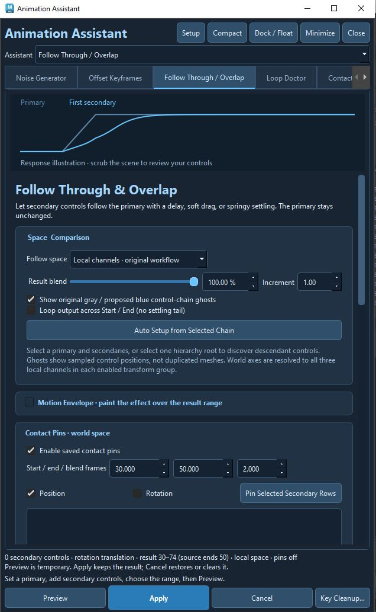

Autodesk Maya animation tool
Animation Assistant
Animation Assistant is an upgraded version of Offset Key that adds motion shaping, pose tools, and curve cleanup to its keyframe timing controls in one dockable Maya window.
- Keyframe timing: Shift, stagger, and randomize timing across controls.
- Noise Generator: Add repeatable, seeded motion with per-channel controls and a curve preview.
- Follow Through & Overlap: Add delayed secondary motion with control falloff, motion envelopes, and loop options.
- Squash & Stretch: Shape poses or timed pulses with volume preservation, per-control stagger, and rebound.
- Motion Paths & Arcs: Review motion trails, spot sharp turns, and reshape paths with arc or Bézier handles.
- Contacts and props: Lock planted controls and animate objects being held, released, or passed between hands.
- Body mechanics: Review balance and jump trajectories, and transfer poses from a mapped posing dummy.
- Loop and key cleanup: Inspect loop seams and preview key reductions within a chosen error tolerance.
- Preview and reuse: Review changes with Preview, Apply, and Cancel, and save character mappings and settings.